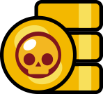

Monedas
Las monedas son una moneda del juego que se puede obtener del Camino de Trofeos, Récords, los niveles del Brawl Pass, Misiones, la Megahucha, Starr Drops y ocasionalmente de forma gratuita en la sección de Ofertas Diarias. Las monedas se usan para mejorar a los Brawlers. Ocasionalmente, también pueden usarse para comprar Gadgets, Refuerzos, Habilidades estelares e Hipercargas para los brawlers, además de los Aspectos Dorados y Plateados para ciertos Brawlers en el Catálogo.